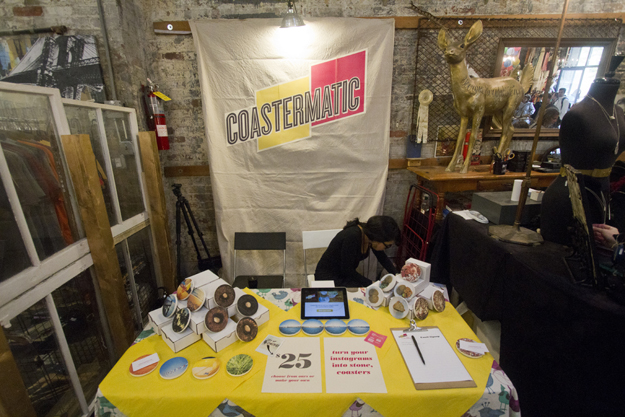
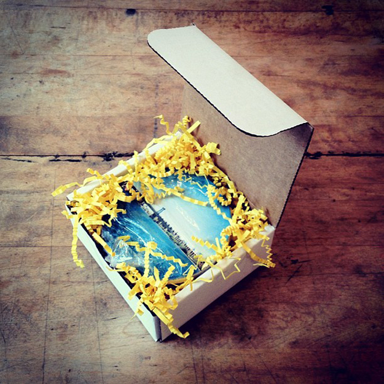
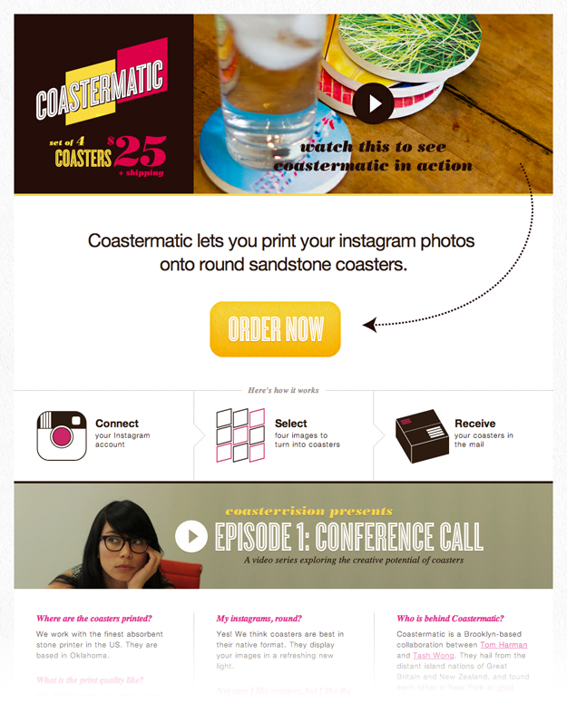

MFA IXD
Coastermatic
A service allowing you to turn your Instagram photos into stone, coasters.
The project began as a collaboration with Tash Wong as an experiment in Customer Acquisition and Minimum Viable Product but quickly escalated into a self-initiated entrepreneurial summer internship. To date, Tash and I have performed all roles including Product Strategy, Visual Identity, UI Design, Film Making, Photography, Coding, Marketing and Business Development.
We think there’s a lot of exciting possibilities around making technology more human in the home and Coastermatic represents the “first pancake” in an exploration of this landscape.
Alternative ideas originally under consideration included Soupscription and Mariachigram. Shockingly, neither gained enough traction to take forward, more details can be found in this blog post.
Coastermatic began as a collaboration with Tash Wong as part of Gary Chou and Christina Cacioppo‘s Entrepreneurial Design class and remains an ongoing project.